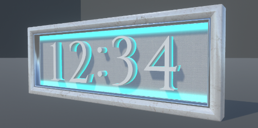
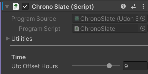
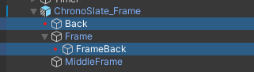
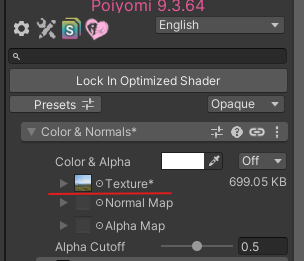
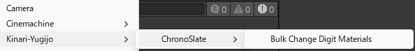

VRCHAT WORLD GIMMICK
クロノスレート 説明書
VRChat用の立体時計ギミックです。
同梱しているマテリアルを差し替えることで、
雰囲気に合わせたカスタマイズが可能です。
VRChatのネットワーク時刻を時と分で表示します。

動作環境
| 項目 | バージョン |
|---|---|
| Unity | 2022.3.22f1 |
| Poiyomi Toon Shader | 9.3.64 |
Poiyomi Toon https://www.poiyomi.com/
VCC / ALCOM / Boothから入手可能です。
負荷
| ポリゴン数 | 約3,300 |
| マテリアルスロット数 | 9 |
いずれも同時に描画されるぶんの数です。
数字は29個のメッシュを出し分けているので、
プレハブ内の合計はポリゴン11,546・スロット34になりますが、
表示していない25個は非アクティブなので描画されません。
利用規約
本データのご利用前には必ず以下の利用規約をご確認ください。
本データの利用条件はVN3ライセンスに基づきます。
| 日本語 | 規約全文 (JP) |
| English | Terms of Use (EN) |
| 한국어 | 이용규약 (KO) |
| 中文 | 使用条款 (ZH) |
本規約は、あしやまひろこ（@hiroko_TB）氏が作成したVN3ライセンスのテンプレートを使用しています。
他言語との差異が生じる場合、日本語の利用規約を優先します。
導入手順
- 同梱しているunitypackageをインポートします
（unitypackageをD&DあるいはAssets>Import Package>Custom Package）
Assets/KinariYugijo/ChronoSlateに本データが展開されます。 - Assets/KinariYugijo/ChronoSlate/Prefabs/ChronoSlate.prefabをシーンのHierarchyへドラッグ＆ドロップします。
- 位置・向き・大きさを調整し、日本以外のタイムゾーンを使用する場合は、次の「時刻の設定」でタイムゾーンを合わせます。
時刻の設定
配置したChronoSlateのChronoSlateコンポーネントの
Utc Offset Hoursでタイムゾーンを設定します。
小数、負の値を指定可能です。

| 地域 | 設定値 |
|---|---|
| 日本（JST） | 9 |
| イギリス（GMT） | 0 |
| アメリカ西海岸（PST） | -8 |
置き方
デフォルトサイズは大きめとなっているので、
卓上に置く場合はルートのTransformのScaleで調整してください。
見た目のカスタマイズ
時計のフレーム、背景、数字の見た目がカスタマイズ可能です。
各種マテリアルを用意していますので、ぜひ好みの見た目を探してみてください。
プレハブの種類
見た目を調整したプレハブを同梱しています。
| プレハブ | 内容 |
|---|---|
| ChronoSlate | 標準のChronoSlate |
| ChronoSlate_Picture | 画像表示がメインにしたChronoSlate。背景に好きな画像を設定できます |
| ChronoSlate_MiniTimer | 時計を右下に小さく表示するレイアウトのChronoSlate。飾り付けを想定しています |
| ChronoSlate_NoBack | 背景を無くしたChronoSlate。壁掛けや控えめな設置に向いているスタイルです。 |
ChronoSlateの背景を消す
自身で背景非表示にする場合はChronoSlateの
以下のGameObjectを非アクティブにしてください。

FrameBackを選択しているところ">背景に好きな画像を出す
Materials/Back/ChronoSlate_Back_Picture01の
Textureを差し替えると、任意の画像を表示できます。
そのマテリアルをChronoSlate>ChronoSlate_Frame>BackのMeshRenderに設定してください。
ChronoSlate_Picture.prefabでは該当マテリアルを使用しているので、
prefabを設置するだけで画像の表示が可能です。

数字の見た目の変更方法
1.Hierarchy上のChronoSlateを右クリック
2.Kinari-Yugijo>ChronoSlate>Bulk Change Digit Materials
3.ウィンドウのNew materialに任意のマテリアルを設定

Materials/Common — 25種
このディレクトリのマテリアルはフレーム・数字・背景のどのパーツにも使用可能です。
- Fabric01–06
- Glass01–02
- Glitter01
- Lava01
- Metal01–05
- Stone01–05
- Wood01–05
Materials/Back — 背景用7種
背景用に使うことを想定したマテリアルです。
- Emission01
- Emission02
- Emission03
- Emission04
- Emission05
- Emission06
- Picture01
Materials/Number — 数字用5種
数字用に使うことを想定したマテリアルです。
- Emission01
- Emission02
- Emission03
- Glass01
- White01
Glass系は描画負荷が高めです。Common_Glass01/Common_Glass02/Number_Glass01はPoiyomi Toon Grab Passを使用しています。負荷が気になるワールドでは他のマテリアルをご利用ください。
よくあるご質問
時刻がずれています
「時刻の設定」の項目をご確認ください。
日本標準時なら9となります。
マテリアルがピンクになります
Poiyomi Toonが導入されていない可能性があります。
「動作環境」の項目をご確認ください。
秒は表示できますか
できません。表示は4桁かつ、時:分の固定です。
使用素材
以下の対象素材にはVN3ライセンスの制限は適用されず、CC0ライセンスが優先されます。
対象 Textures/Commonディレクトリ内のテクスチャ
更新履歴
| 版 | 日付 | 内容 |
|---|---|---|
| v1.0.0 | 2026-08-21 | 初版公開 |